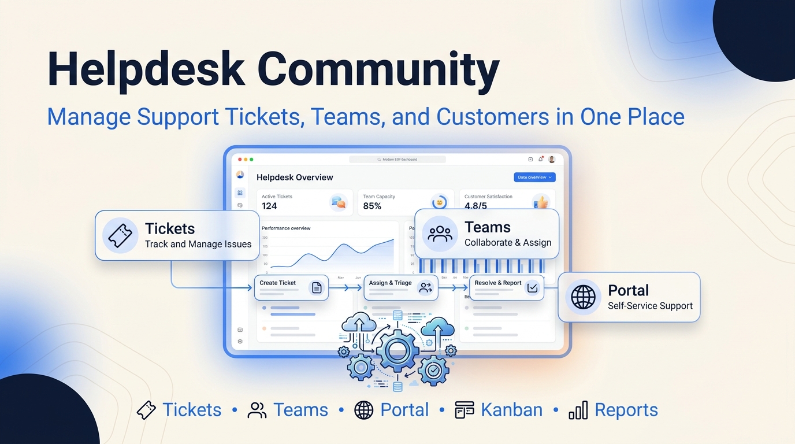

A modern, lightweight helpdesk module for Odoo Community.
Compatible with Odoo 14, 15, 16, 17, 18 and 19.
Odoo 14 – 19 Community & Enterprise LGPL-3 No external services
Many Odoo Community users need a simple helpdesk without Enterprise-only features. Helpdesk Community provides a clean ticket workflow, customer portal access, email notifications and team management while remaining lightweight and fully open source.
Tickets are captured in one place, routed to a team, moved through a defined pipeline, and made visible to customers through the portal — all inside Odoo, with no subscription and no third-party service.
Create, assign, prioritize and resolve tickets, with chatter history and a generated ticket number.
Move tickets across pipeline stages by drag and drop: New → In Progress → Resolved → Closed.
Group agents into teams, each with its own members and assignment policy.
Assign tickets to a team and an agent; manual, round-robin, least-loaded or random policies.
Classify tickets by type or product for triage and reporting.
Portal users submit and follow their own tickets without an agent login.
Notify the assignee on assignment and the customer on stage changes, using Odoo mail templates.
Filter and group by stage, team, priority, assignee or category.
Three roles — User, Team Leader, Manager — plus portal access, with record rules.
One codebase built and validated on Odoo 14 through 19.
Helpdesk Community is fully functional on its own. The list below states clearly what is included today and what is planned for a separate Professional edition, so there is no ambiguity.
| Odoo | 19.0 | 18.0 | 17.0 | 16.0 | 15.0 | 14.0 |
|---|---|---|---|---|---|---|
| Supported | ✓ | ✓ | ✓ | ✓ | ✓ | ✓ |

Kanban view — move tickets across pipeline stages by drag and drop.

Ticket form — subject, description, priority, team, assignee and chatter.

List view — sort and bulk-manage tickets.

Search and filters — group by stage, team, priority or category.

Teams — group agents and set an assignment policy.

Stages — configure the pipeline, including start and terminal stages.

Customer portal — a customer sees their own tickets and status.

Portal — a customer submits a new ticket through a form.

Portal detail — a customer follows one ticket's progress.
FoxPink — open-source Odoo modules.
GitHub · LGPL-3